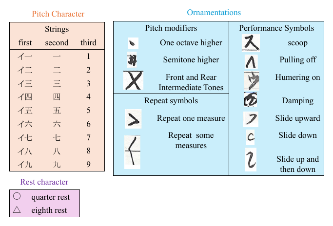
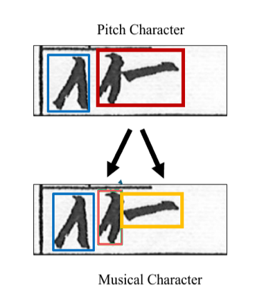

Optical Music Recognition for Handwritten Kateishiki-fu Scores using Symbol Detection and Melody Completion
Abstract
Kateishiki-fu is a non-staff notation system used for Japanese traditional instruments. Optical music recognition (OMR) for handwritten Kateishiki-fu remains largely unexplored because annotated data are limited and the notation has culture-specific structure. We construct a dataset of 88 handwritten score images with 15,788 manually annotated music symbols. We then propose a two-stage OMR pipeline that first detects symbol candidates using a low-confidence threshold and then refines uncertain predictions with a music language model. In addition to the original evaluation, we report three-fold cross-validation and a preliminary piece-level split, and compare MusicBERT before and after fine-tuning.
Method
The detector retains low-confidence candidates to prioritize recall. The sequence constructor groups components into notes and orders them from top to bottom, then right to left. MusicBERT estimates uncertain pitches from their melodic context. Finally, a hypothesis selector compares keeping each note with deleting it, removing false positives that do not fit the sequence.
Symbol detection
Find component symbols at a low threshold to preserve faint or ambiguous candidates.
Sequence construction
Group detections into notes and arrange them in Kateishiki-fu reading order.
Melody completion
Use MusicBERT to infer uncertain pitches from surrounding notes.
Hypothesis selection
Choose whether to keep or delete a low-confidence note based on melody likelihood.
Kateishiki-fu Scores Dataset
The dataset contains 22 musical pieces and 88 handwritten score pages. Its component-level annotation scheme represents the notation with 33 classes, reducing a long-tailed set of more than 72 possible note combinations.
Each symbol is annotated with a bounding box and class label. Lyrics, titles, tuning information, and other text unrelated to musical performance are excluded.


Dataset at a glance
bounding box
Breaking notes into reusable parts helps represent rare combinations with a compact set of labels.
Results
Across three folds, the proposed method reaches the highest mean precision and F1 among the compared methods, with a mean F1 of 80.44 ± 3.55%. RT-DETR has higher recall and lower SER, while the proposed method has higher precision and F1. Against the YOLOv11 detector at the same low confidence threshold, adding completion and selection improves precision, F1, and SER. A preliminary piece-level split produces comparable F1, and fine-tuning MusicBERT substantially improves F1 over its pretrained-only setting.
| Method | Precision ↑ | Recall ↑ | F1 ↑ | SER ↓ |
|---|---|---|---|---|
| YOLOv11 (θ = 0.1) | 77.13 ± 5.44 | 84.59 ± 1.34 | 80.29 ± 3.71 | 33.37 ± 12.08 |
| GPT-5.6 Sol (high) | 54.44 ± 3.58 | 52.43 ± 4.81 | 53.41 ± 4.22 | 63.32 ± 3.60 |
| Gemini 3.1 Pro (high) | 48.09 ± 1.17 | 46.87 ± 3.41 | 47.39 ± 1.69 | 71.22 ± 3.43 |
| Jeongganbo OMR | 28.26 ± 12.95 | 31.70 ± 14.77 | 29.84 ± 13.71 | 148.15 ± 27.06 |
| RT-DETR (alone) | 66.59 ± 1.61 | 95.43 ± 0.29 | 78.43 ± 1.21 | 25.62 ± 0.62 |
| Ours (YOLOv11 + completion) | 77.89 ± 5.30 | 83.98 ± 1.20 | 80.44 ± 3.55 | 32.71 ± 11.21 |
The prompted VLM baselines use character crops with ground-truth labels as few-shot examples. SER: Symbol Error Rate.
| Split | Precision ↑ | Recall ↑ | F1 ↑ | SER ↓ |
|---|---|---|---|---|
| Page-level | 77.89 ± 5.30 | 83.98 ± 1.20 | 80.44 ± 3.55 | 32.71 ± 11.21 |
| Piece-level | 78.30 ± 2.55 | 84.58 ± 1.02 | 80.39 ± 1.40 | 29.02 ± 1.06 |
The preliminary piece-level evaluation is comparable to the page-level result and reduces the risk of melodic patterns leaking across pages from the same piece.
| Setting | Precision ↑ | Recall ↑ | F1 ↑ | SER ↓ |
|---|---|---|---|---|
| Pretrained-only | 80.64 | 84.24 | 81.94 | 30.04 |
| Fine-tuned (ours) | 90.35 | 89.77 | 89.15 | 30.69 |
Fine-tuning improves F1 by 7.21 percentage points, while SER changes from 30.04% to 30.69% in this ablation.
BibTeX
@inproceedings{kurita2026kateishikifu,
title = {Optical Music Recognition for Handwritten Kateishiki-fu Scores using Symbol Detection and Melody Completion},
author = {Kurita, Emika and Ikeda, Wataru and Yamada, Shuhei and Suzuki, Haruyoshi and Sugimoto, Maki and Isogawa, Mariko},
booktitle = {Asian Conference on Computer Vision (ACCV)},
year = {2026}
}